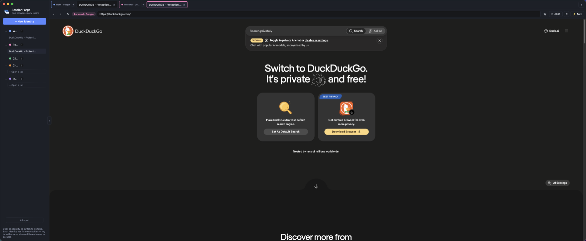

Forge your first identity in 60 seconds
Download, open, click + New Identity, and log into the same site twice. That's the whole demo.
Stay logged into the same website as many different users at once. Every tab runs a real Chromium engine — but its cookies, storage, and login live in their own isolated bucket.

Not incognito windows. Not separate profiles you juggle. Real, persistent, side-by-side sessions.
Every tab gets its own cookie jar, localStorage, and IndexedDB via Chromium partitions. Two logins to the same site never see each other.
Organize tabs under colour-coded identities in a clean tree. Drag a tab onto another identity to instantly rebind its session.
Fire the same task across many identities at once, or schedule per-tab runs with a live countdown and full run history.
Bookmarks, history, find-in-page, Ctrl+Tab switching, keyboard shortcuts, export/import identities — the essentials, done right.
No account, no cloud, no telemetry. Every partition lives on your own disk. Open source — read exactly what it does.
Native builds for macOS (Intel & Apple Silicon), Windows, and Linux. Built on Electron, so it's the same Chromium you already trust.
<!-- Two logins to the same site, side by side --> <webview src="https://claude.ai" partition="persist:user1"></webview> <webview src="https://claude.ai" partition="persist:user2"></webview> // Both render claude.ai in parallel. // Two independent Chromium sessions. // Neither knows the other exists.
Anywhere you'd otherwise juggle incognito windows, separate browsers, or a second laptop.
The stuff people ask before their first download.
No. Incognito forgets everything the moment you close it, and Chrome profiles open in separate windows you have to juggle. SessionForge keeps persistent, side-by-side sessions in one window — you can be logged into the same site as several different users at once, and they'll all still be there tomorrow.
The builds are unsigned (it's a free beta), so macOS Gatekeeper and Windows SmartScreen warn on first launch. On macOS, right-click the app → Open; on Windows, click More info → Run anyway. Prefer not to trust a binary? The full source is public — build it yourself.
Everything stays local. Each identity's cookies and storage live in their own Chromium partition under your app-data folder — e.g. ~/Library/Application Support/SessionForge Browser/Partitions/<id> on macOS. No account, no cloud sync, no telemetry.
Any of them. Each tab is a real Chromium engine via Electron's <webview>, so sites behave exactly as they do in Chrome — just with an isolated cookie jar per identity.
Yes — MIT-licensed and free. Read the code, file issues, or fork it on GitHub.
Download, open, click + New Identity, and log into the same site twice. That's the whole demo.